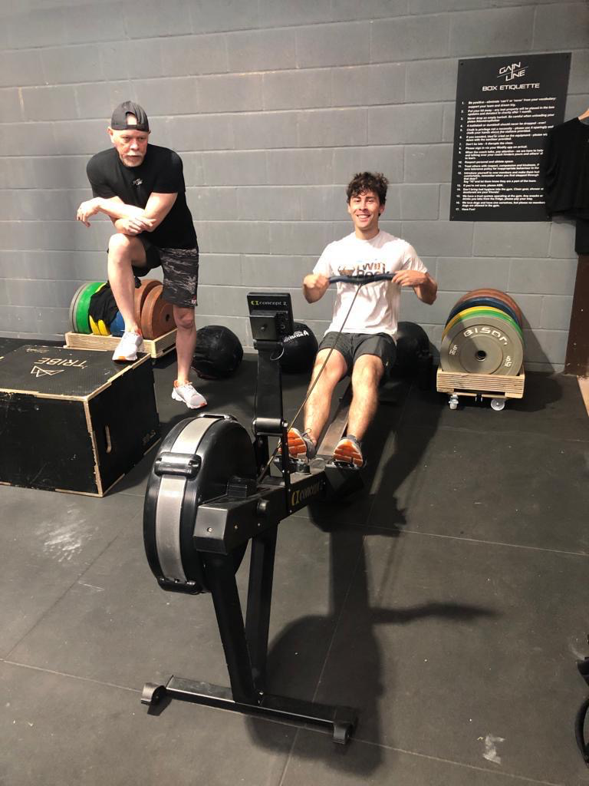

Hobbies
Climbing

- Strategic Problem Solving: Regularly analyse and plan complex climbing routes,
refining my ability to break down large challenges into manageable, logical
- Resilience Under Pressure: Climbed challenging routes where focus and adaptability
were critical, mirroring my approach to high-pressure coding environments or tight
deadlines
- Decision Making: Developed a keen ability to assess risks and make informed decisions
, a mindset I bring to designing robust and secure systems
Crossfit

- Continous Improvement Mindset: Dedicated to tracking progress and iterating
on techniques, embodying a growth-oriented attitude valuable in learning and applying new
technologies
- Team Collaboration: Participate in group Crossfit workouts, fostering communication
and teamwork-critical in pair programming and collaborative software projects
- Discipline: Successfully balance intense training schedules with personal and professional
commitments, enhancing productivity and task prioritisation in engineering rolse